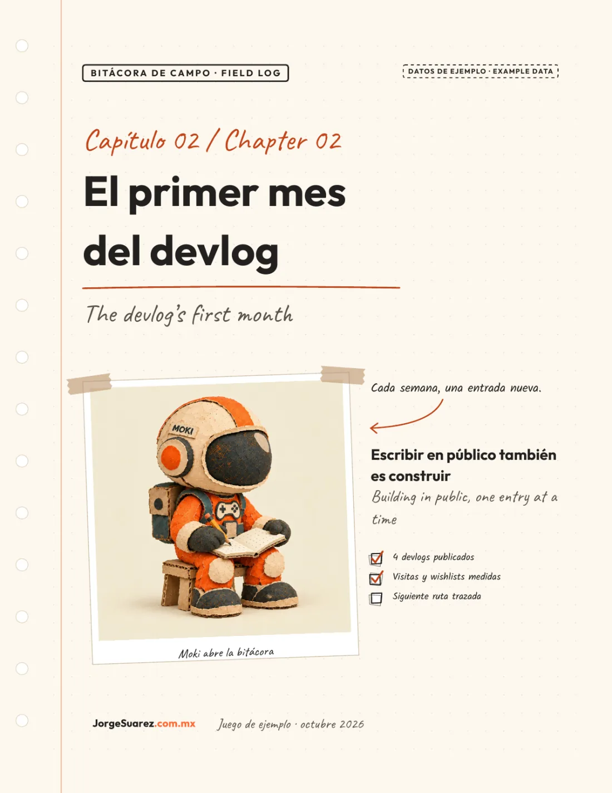
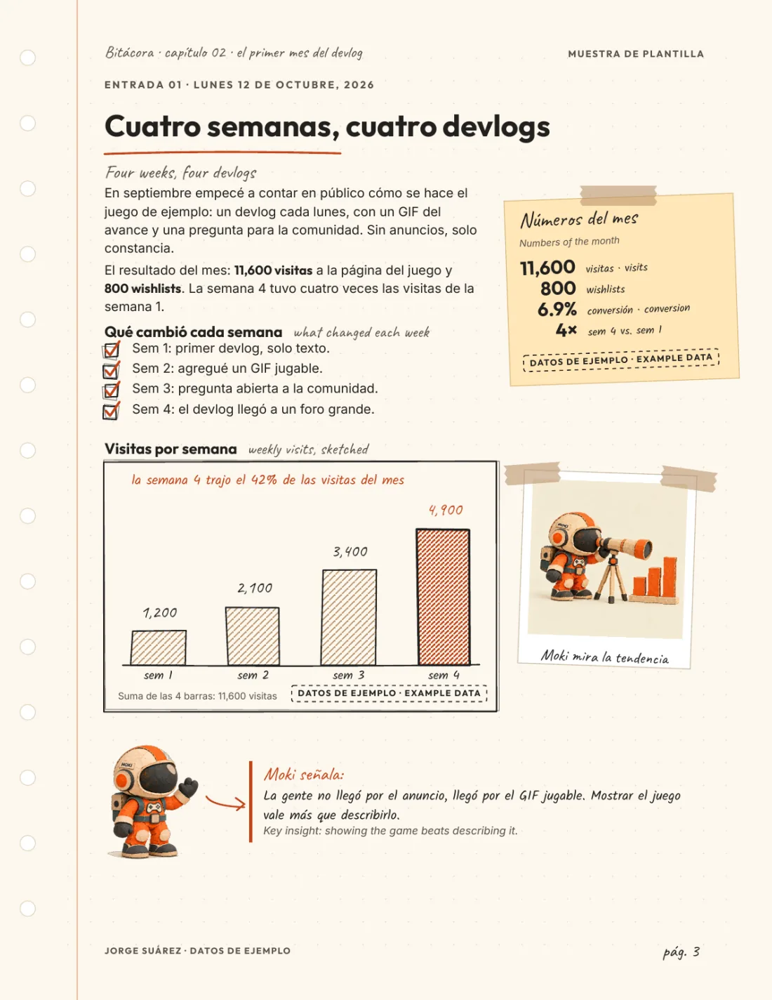

Sí
Marca personal
Documentos que firma Jorge Suárez como persona. El lector llega a jorgesuarez.com.mx.
Plantillas de reporte · Cuaderno de campo
Estilo oficial para documentos y reportes de la marca personal de Jorge Suárez. Se lee como bitácora: con carácter, y se imprime en carta.
Hoja punteada, notas a mano, fotos con cinta y Moki con propósito. Títulos en Outfit. Texto en Inter.

Este estilo es solo para la marca personal de Jorge Suárez (JorgeSuarez.com.mx). No se usa en Amber, Arden, Sparkplug, Tecni Moto ni en ninguna otra marca o empresa.
Bitácoras, capítulos, ebooks y reportes de aprendizaje de JorgeSuarez.com.mx. Cada pieza funciona como preludio o capítulo de un libro: divertida, y lista para imprimir.
Sí
Documentos que firma Jorge Suárez como persona. El lector llega a jorgesuarez.com.mx.
No
Amber, Arden, Sparkplug y Tecni Moto tienen su propia identidad. Este cuaderno no se les aplica.
Cinco páginas carta. Capítulo de ejemplo: el primer mes de un devlog. Los números son de ejemplo y cuadran entre sí.
Título, foto pegada con cinta, chequeos a mano y la firma.

Texto, números en nota adhesiva y una gráfica dibujada a mano.
El ZIP trae la plantilla Typst, el ejemplo, las fuentes con su licencia y las poses de Moki. El PDF es la muestra compilada del 15 de octubre de 2026.
ZIP
cuaderno.typ, ejemplo.typ, build.sh, README, fonts/ y assets/.
Descargar plantilla-cuaderno.zipCinco páginas carta para ver el estilo antes de compilar.
Descargar PDF de muestraOutfit, Inter, Caveat y Kalam se redistribuyen bajo SIL Open Font License 1.1. Las licencias van en fonts/OFL.txt dentro del ZIP. La descarga no otorga una licencia abierta de la marca ni de Moki. Licencia Outfit · Licencia Inter.
Copia la carpeta, cambia el texto y compila. El ejemplo ya corre solo con assets/: no hace falta otra carpeta de imágenes.
#import "cuaderno.typ": * y el bloque #show: cuaderno.with(...)../build.sh mi-reporte.typ mi-reporte.pdf. Hace falta Typst en el PATH.Reglas cortas para no romper el cuaderno ni mezclar marcas.